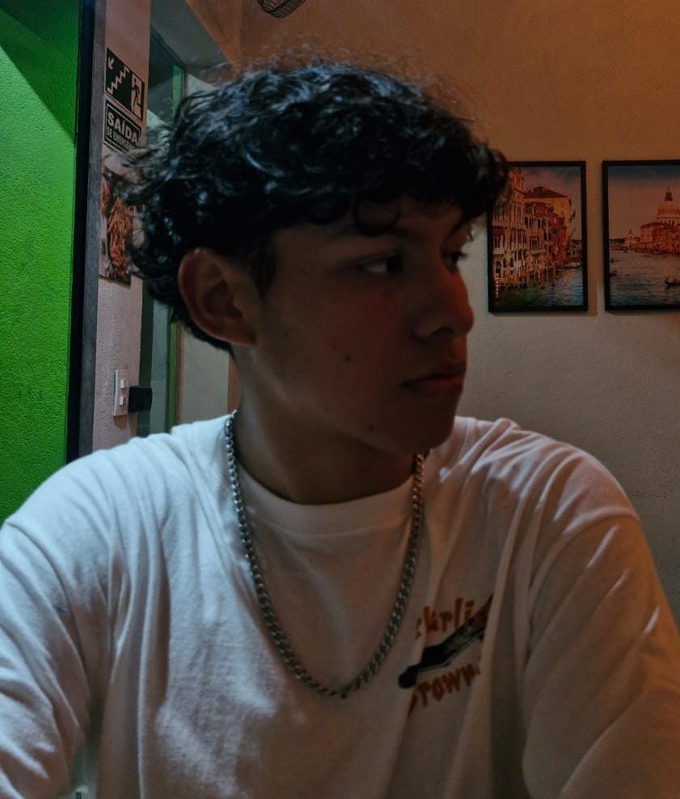

Kauan Victor
Estudante de Tecnologia da Informação na UNIVESP, em busca de oportunidades de estágio na área de tecnologia. Apaixonado por tecnologia e programação, busco constantemente aprimorar meus conhecimentos por meio de cursos e estudos complementares, com o objetivo de me desenvolver profissionalmente e construir uma carreira na área de TI.